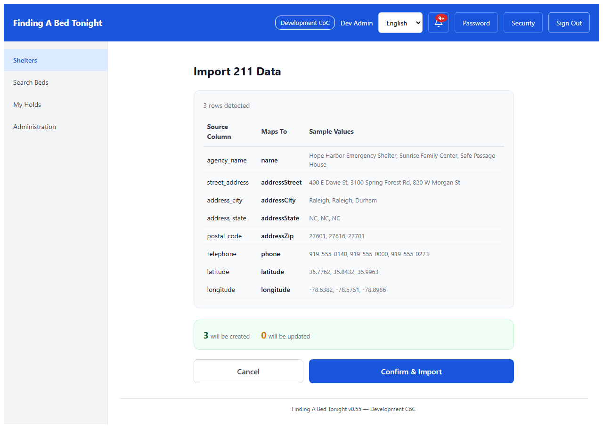
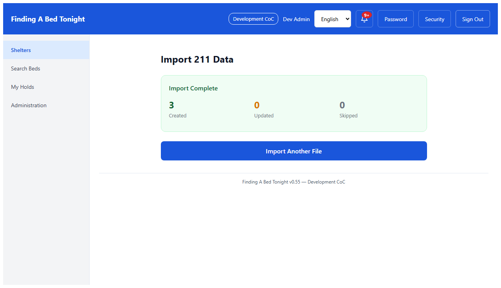
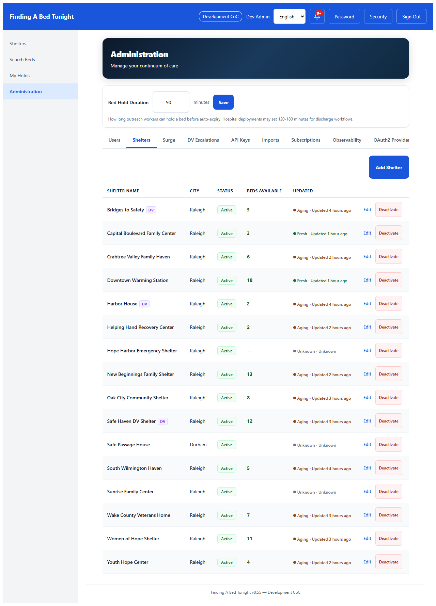
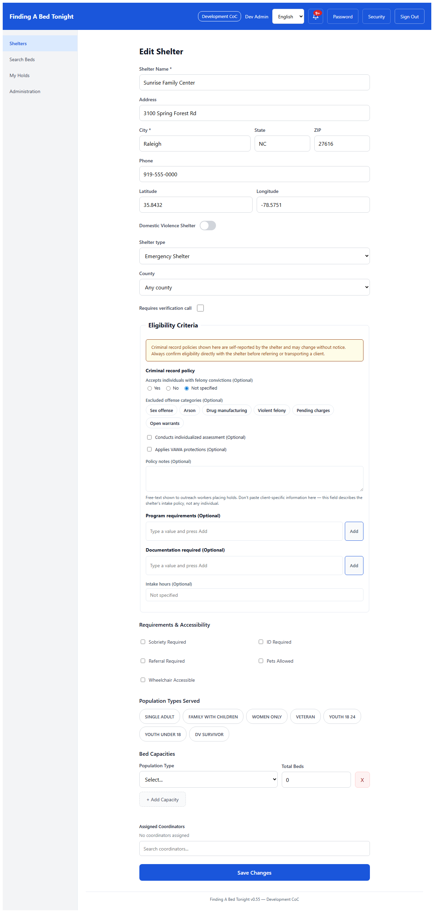
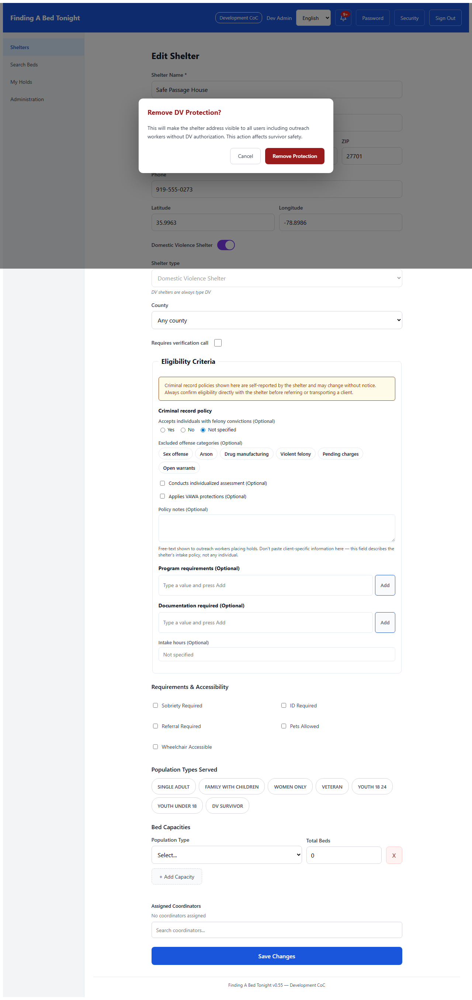
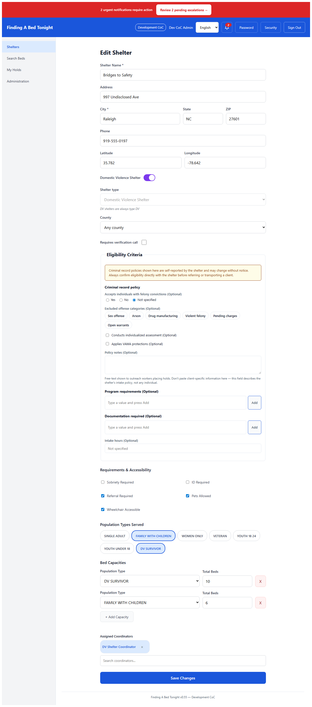

Act 1: Import — Three shelters join the network
Marcus receives a CSV export from the region's 211 database — three shelters that just agreed to participate in coordinated entry. He uploads the file and the system maps the columns automatically. Agency name becomes shelter name. Street address, city, phone — all matched without manual data entry.

One click. Three shelters created. What used to take an afternoon of phone calls and manual data entry is done in seconds. These shelters are now visible to every outreach worker in the system.

Act 2: Correct — Sandra will need this number tonight
Marcus navigates to the Shelters tab. The three imported shelters are here — alongside the thirteen already in the system. Every row has an Edit link. He spots Sunrise Family Center with a placeholder phone number that came through wrong in the 211 data.

A phone number came through wrong in the import. Sandra will need this number tonight when outreach workers call about incoming clients. Marcus clicks Edit, fixes the number, saves. Three taps. The correct number is now visible to every outreach worker in the system.

Act 3: Protect — Safety isn't a setting, it's a commitment
Safe Passage House in Durham serves domestic violence survivors. The 211 import brought it in as a regular shelter — addresses visible, no special protections. The administrator opens the edit form and sees the Domestic Violence Shelter toggle. One decision changes everything.
If someone tries to remove DV protection, the system requires explicit confirmation: "This will make the shelter address visible to all users including outreach workers without DV authorization. This action affects survivor safety." Removing protection is never an accident.

The coordinator's view
Sandra can update her shelter's phone number, hours, and operational details — the things that change week to week. But shelter name, address, and DV status are controlled by the CoC administrator. The fields Sandra needs are editable. The decisions that affect safety require a different level of authority.

A note on shelter types (v0.55+)
The shelter form supports five shelter types:
EMERGENCY (the default),
TRANSITIONAL,
OVERFLOW,
REENTRY_TRANSITIONAL, and the
DV toggle (orthogonal to the type taxonomy — any non-DV shelter type can additionally be flagged DV). The 211 import maps to
EMERGENCY by default; the CoC admin can change a shelter's type during the edit step shown above.
REENTRY_TRANSITIONAL-typed shelters surface an eligibility-criteria editor for criminal-record policy and program requirements when the tenant
reentryMode flag is enabled. See the
reentry walkthrough for the full operator flow.
The Complete Story
From CSV to operational in under a minute. Three shelters that families can now find. One shelter whose survivors are now protected. One phone number that will work when Sandra answers tonight.